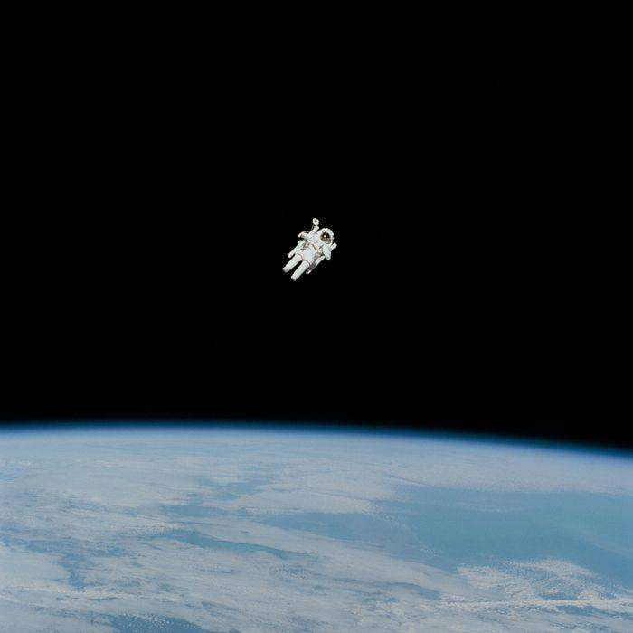
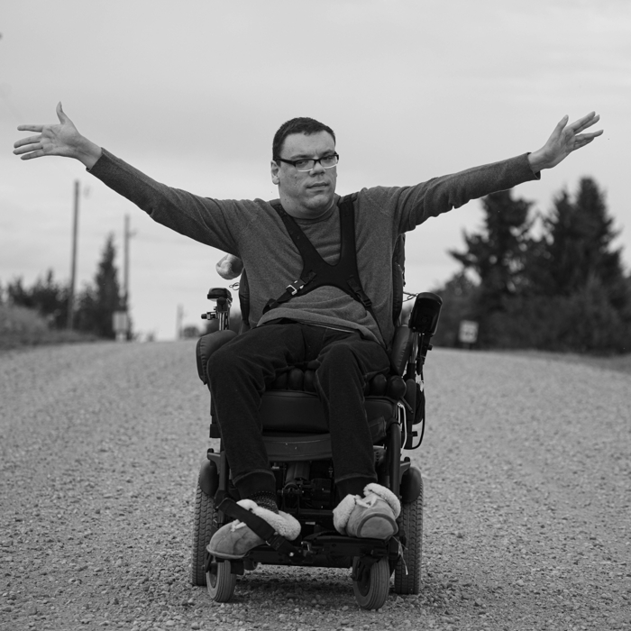
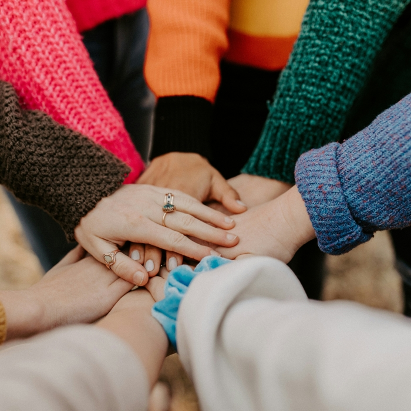
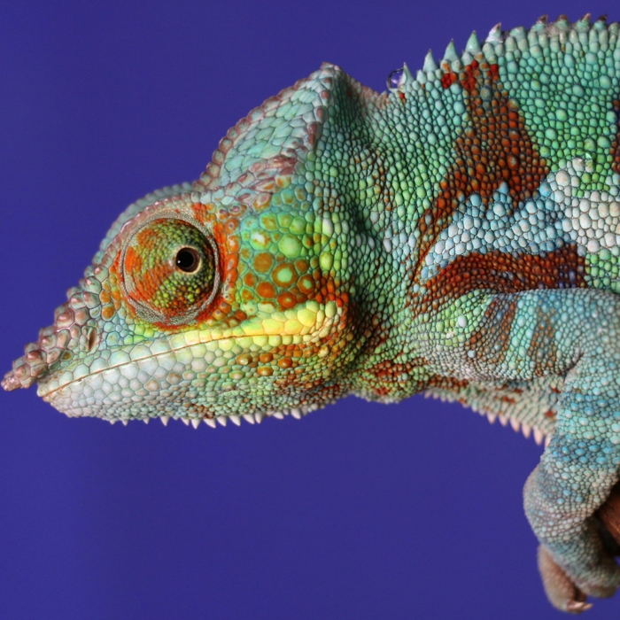
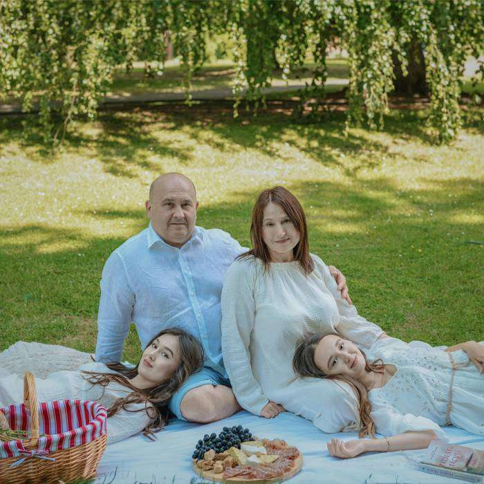

Это было самое начало пути. На этом этапе важно было проникнуться
основами и настроиться на учёбу. И, возможно, подумать, как новые
знания могут повлиять на ваше будущее.
С одной стороны, все как в тумане - размыто, нечетко и нет ясности
как все будет. С чего начнется обучение, какие знания дадут первыми.
С другой стороны, предвкушение чего-то нового и интересного.
1 спринт: Я — чистый лист

</HTML>
На первых этапах мы работали со страхами и сомнениями, которые часто
испытывают новички. Один из них — страх перед чистым листом. Это,
конечно же, намного сложнее, чем боязнь куска бумаги. Часто за этим
ощущением скрываются более глубокие вопросы: с чего начать? а вдруг
будет слишком сложно? что, если я не справлюсь?
За десять с литшним лет, что я не занимался веб-программированием,
оказывается, так много всего изменилось. Появилось так много
возможностей. Чуствую себя космонавтом первый раз вышедшим в
открытый космос и осознавшим его масштаб и величие...
1 спринт: А если не получится?
<CSS>
Первый проект — позади! Но это всё ещё самое начало пути. Радость
могла быстро померкнуть и смениться ожиданием провала. Или вы,
наоборот, могли вдохновиться успехами и поверить в себя.
На самом деле страха не было. Наоборот, это было очень интересно и
вдохновляюще. Ждал с нетерпением продолжения.
2 спринт: Погоня за идеалом

<desigions>
На этом этапе вы уже достаточно разбирались в основах вёрстки, чтобы
понять, как много ещё впереди. Вы могли попытаться погнаться за
идеалом и понять, что он недостижим. А, может, вы вовсе и не
подвержены перфекционизму и вместо того, чтобы сделать идеально,
старались просто сделать.
Второй спринт оказался интересным продолжением первого. С удивлением
обнаружил что технологии разметки веб-страниц сильно продвинулись в
сторону доступности для людей с ограниченными возможностями. Никогда
об этом не задумывался и не замечал...
2 спринт: О тех, кто рядом

care
Всё это время вы были не одиноки (хотя, возможно, иногда и
чувствовали, что одни против целого мира). Вас окружали
одногруппники, команда сопровождения и просто близкие люди, которым
можно пожаловаться, если очередной макет просто так не поддавался.
Осваивать что-то новое легче, когда рядом есть единомышленники, не
правда ли?
Хоть я и не люблю общаться в чатах. Но сам факт их наличия и четкое
управление коммуникацией со стороны сотрудников Практикума, делают
их очень полезными. Спасибо команде за постоянную поддерку и заботу!
3 спринт: Обходные стратегии

<support>
На этом курсе вы постоянно решали разные задачи. В какой-то момент
вам могло показаться, что решения просто иссякли. Значит, пришло
время посмотреть на задачу под другим углом.
С одной стороны углубленной погружение в GRID-ы и подходы к
адаптивной верски вызвали небольшой шок. Так как сразу столо ясно,
что то что делал на 1 спринте можно сделать совсем по-другому и
лучше. С другой стороны получил подтверждение что нет одного верного
подхода и решения. Все очень гибко...
3 спринт: Когда опускаются руки

<lifes-style: none;>
Во время учёбы часто возникает чувство, когда не знаешь, за что
хвататься. Вроде и проектную пора сдавать, и задачи хочется
порешать, и в теории получше разобраться, и жизнь не забыть пожить.
В такие моменты очень нужна концентрация. Вспомните, откуда вы её
черпали.
"Место силы" у каждого свое. Но отдых на природе с семьей мало что
может заменить.
А еще очень важны самомотивация и самодисциплина. Без них никаких
сил не хватит :)
«Сейчас я здесь»
<experience>
Сейчас вы уже очень много знаете о вёрстке. Но это только начало.
Во-первых, впереди ещё много материала про «красотищу». Во-вторых, с
окончанием курса учёба не заканчивается. Вёрстка — это целый мир. И
этот мир постоянно меняется. Познать его полностью не получится, но
это тот случай, когда важен сам процесс познания. Ведь часто путь —
и есть результат.
Я рад что выбрал эту программу. Я узнал много нового. Все что
изменилось в верстке за 10 лет, что я ей не занимался. В общем я
получил то что хотел и с удовольствием буду осваивать новые знания
дальше.